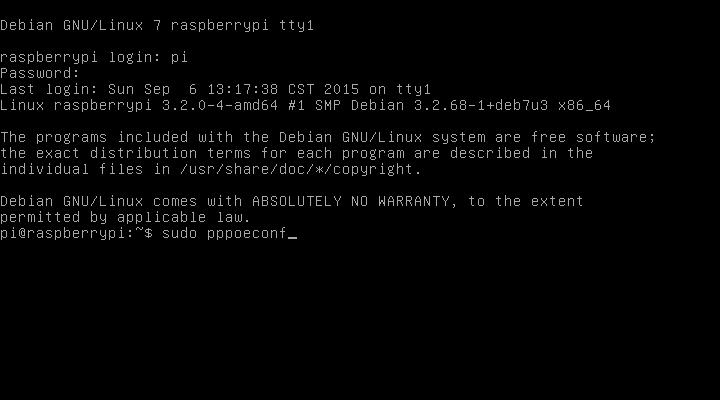
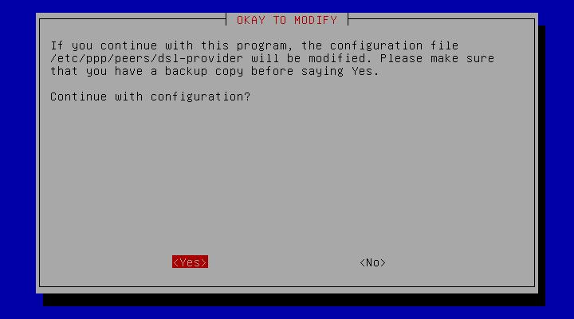
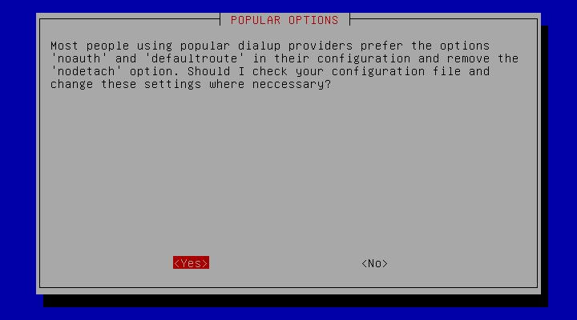
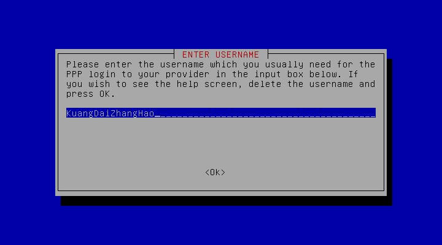
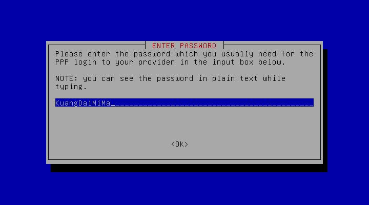
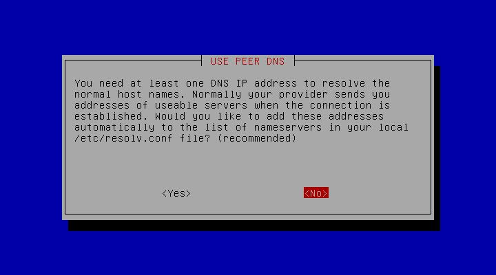
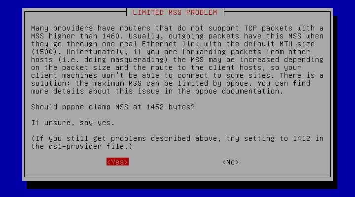
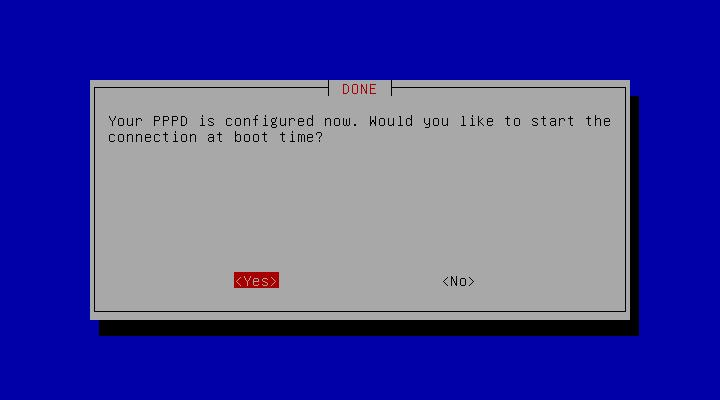
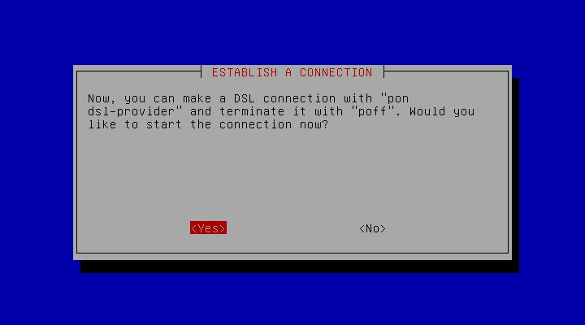
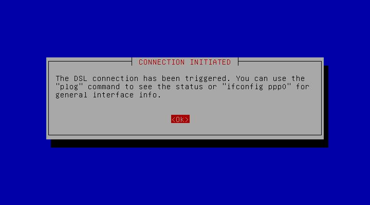

前期准备
- 一个刷好特制系统的路由器
- 一套供电设备：手机充电器(电压5V，电流1A－2A)＋数据线(安卓数据线，MicroUSB口)
- 宽带拔号的帐号密码
- 无线路由器(TP-Link或水星)上LAN口要有2个空位！
- 无线路由器如果LAN口不足，就要另配一个4口HUB
第一步，修改原无线路由器
- 登录路由器管理界面，[DHCP服务器]->[DHCP服务]->[不启用]，并重启
- 原来插在无线路由器WAN口的网线改插到LAN口
- 新送的网线，一头连接原无线路由器的LAN口，一头连接新的路由器
- 打开cmd开始ping新的路由器，指令是：ping 192.168.1.254 -t
- ping通了方可继续下一步，ping不通就要在这步做详细调试
第二步，登录树莓派
- 在电脑上下载putty并打开
- Host Name一栏输入IP地址：192.168.1.254直接回车或点下面的Open
- 按提示输入帐号密码
- 登录成功后进入下一步
第三步,配置拔号帐号
-
- 输入sudo pppoeconf
- 
-
- OKAY TO MODIFY这步Yes
- 
-
- POPULAR OPTIONS这步Yes
- 
-
- ENTER USERNAME这步输入宽带帐号
- 
-
- ENTER PASSWORD这步输入宽带密码
- 
-
USE PEER DNS这步No(非常重要)
- 
-
- LIMITED MSS PROBLEM这步Yes
- 
-
- DONE，是否开机自动拔号，这步Yes
- 
-
- ESTABLISH A CONNECTION，是否现在就拔号，这步Yes
- 
-
- 拔号上网到此配置结束
- 
- 其实就是输入帐号密码和DNS那步选NO，其它全部是YES
常用指令
- 本路由器暂地管理界面，需手工输入指令调试，下面列出一些常用指令
-
- ip addr
- 查看本机的IP地址
-
- sudo pon dsl-provider
- 手工拔号
-
- sudo poff dsl-provider
- 手工断线
-
- sudo plog
- 拔号过程中可查看log，拔号结速后失效，拔号过程中可以多次输入查看不同时间点的进度
-
- iftop_eth0
- 查看局域网所有网络连接及流量